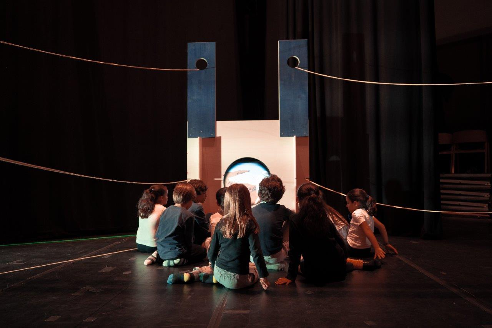
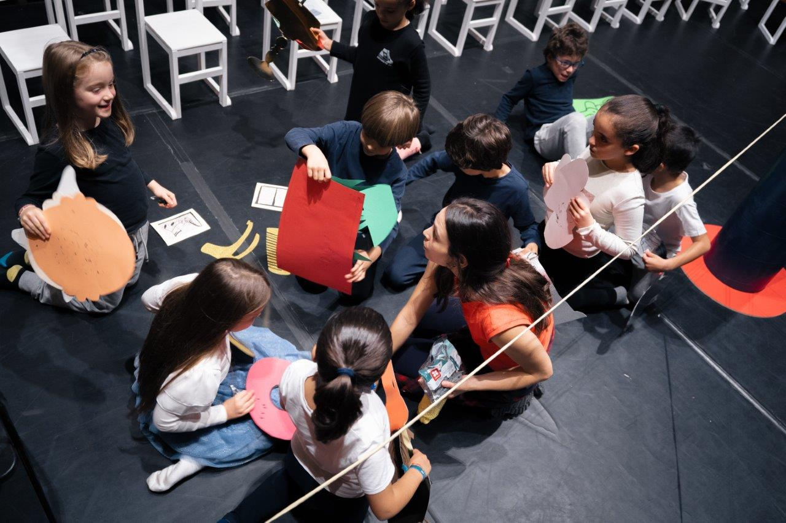
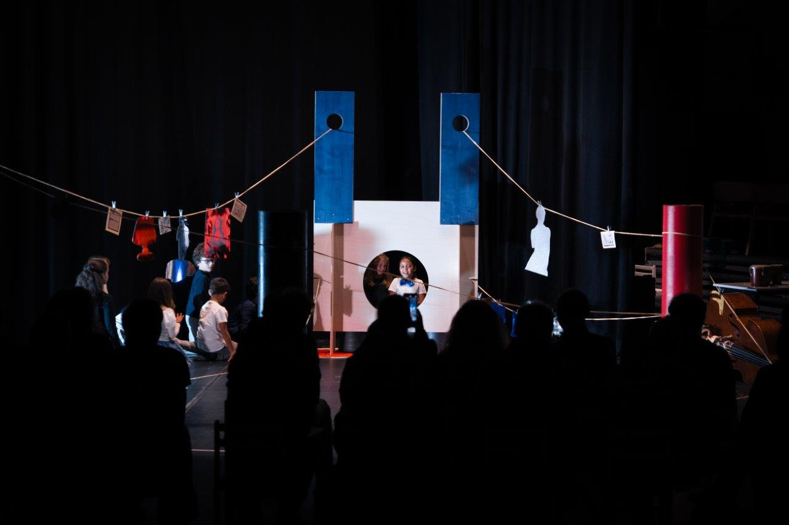

Projetos · a ficha, desenvolvida
Das três do primeiro estudo escolheu-se a ficha: a identificação quieta de um lado, o material a passar do outro. O que estava feito era a ideia; faltava-lhe a casa. Estas três páginas são a ficha já com o cabeçalho do site — o logótipo que salta ao passar o rato, o PT—EN, o triângulo —, a faixa do rodapé, e a moldura que rola entre os dois em vez de ser a página a rolar.
Depois disso, três maneiras de a levar mais longe. Não são três desenhos diferentes: é a mesma ficha, com uma pergunta de cada vez. A coluna basta-se? A identificação quer ser um objecto? E quando um projeto trouxer material a mais, quem é que trata de o arrumar?
O que se desenvolveu, e porquê
index.html, não uma imitação: o mesmo desenho do logótipo com o mesmo salto das letras, o mesmo triângulo, a mesma frase a correr. E o documento não rola — rola a moldura entre as duas faixas, que é o que as mantém quietas no iOS. Vive tudo em casa.css e casa.js; num site a sério seria o ficheiro que a entrada e todas as páginas de projeto leem.--gutter e alinha com o logótipo, como o conteúdo dos cartões do mosaico. No primeiro estudo a página estava centrada, e perdia esse alinhamento — que é metade do parentesco. O que está na coluna do material pára na largura de leitura do site (900px) e deixa o resto do ecrã em branco, que é o que o cartão aberto em painel também faz.pt e en dentro de cada campo, como os eventos do index.html. O PT—EN funciona: muda a identificação, os rótulos, o texto, as descrições das fotografias e a frase da faixa. O título não se traduz — é o nome da peça, e é a decisão que o site já tomou na lista EVENTOS.
a · coluna
A ficha, e nada mais: a identificação quieta à esquerda com um filete a separá-la, o material à direita. É o mínimo que a ideia pede, e serve de padrão às outras duas. Quem só quiser a ficha dentro de casa, pára aqui.

b · cartão
A identificação deixa de ser uma margem com texto e passa a ser um objecto: o azul do mosaico, o mesmo padding dos cartões. Quem vem do mosaico encontra aqui a mesma coisa que carregou, de pé.

c · índice
Abre com uma fotografia à largura toda, e a coluna — que estava quieta a não fazer nada — ganha um índice do que há na página e diz em que ponto se vai. A ficha técnica desce para o material, para a coluna caber na janela.
Onde é que cada uma serve
O que fica por decidir
casa.css, ou o site passa a ser um documento só e as páginas de projeto abrem lá dentro, como os cartões abrem em painel. As duas respostas são grandes; a segunda muda o site inteiro.voar-a.html por causa da experiência. A sério seria /projetos/voar-muito-perto-do-sol/: o nome do projeto no endereço, que é o que se manda a alguém e o que os motores de busca guardam.